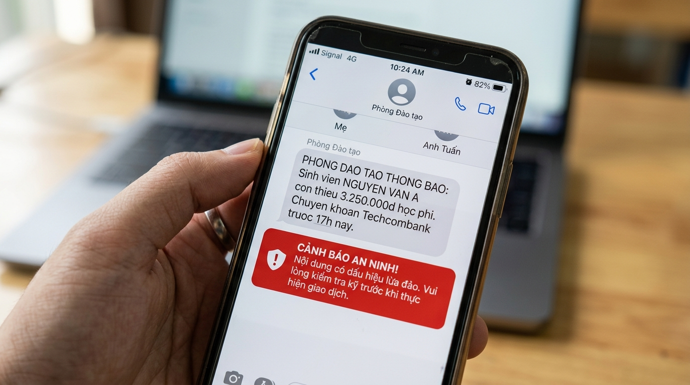
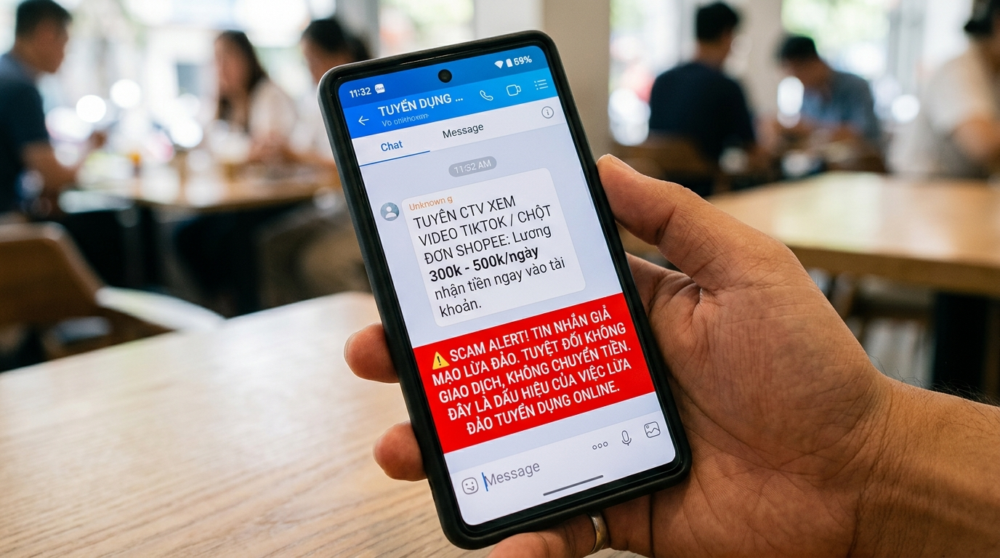
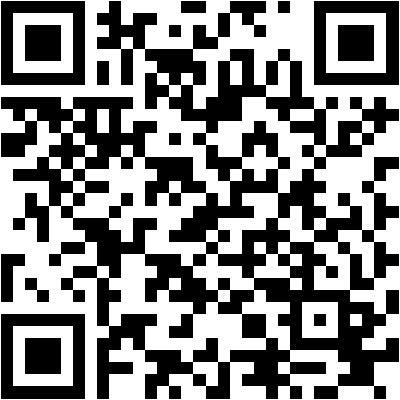
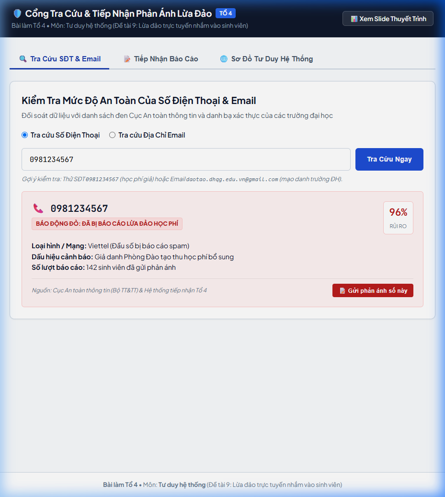

LỪA ĐẢO TRỰC TUYẾN
NHẮM VÀO SINH VIÊN
Bóc tách mạng lưới lừa đảo, chỉ ra điểm gãy liên kết phòng vệ và giải pháp Cổng tra cứu & tiếp nhận phản ánh
- Chào Thầy Cô và các bạn. Giới thiệu đề tài 9 dưới góc độ môn Tư duy hệ thống.
- Tiếp cận khoa học bóc tách cấu trúc hệ thống của đường dây tội phạm và tìm ra nguyên nhân gốc rễ vì sao các bên cảnh báo riêng rẽ lại thất bại.
Thực Trạng: Sinh Viên & Giới Trẻ Trong Tầm Ngắm Tội Phạm Mạng
Dữ liệu tổng hợp từ Báo cáo GASA-Chongluadao (2023), Cục An toàn thông tin Bộ TT&TT, Hiệp hội An ninh mạng Quốc gia (NCA)
Theo báo cáo của Hiệp hội An ninh mạng Quốc gia (NCA, tháng 12/2024): cứ 220 người dùng smartphone thì 1 người trở thành nạn nhân. Sinh viên và học sinh được xác định là nhóm "mục tiêu mềm" hàng đầu do thiếu kinh nghiệm sống và dễ bị thao túng tâm lý.
Theo Báo cáo "State of Scams in Vietnam 2023" của GASA phối hợp Chongluadao.vn: Facebook và Gmail là kênh lừa đảo số 1 (71%), tiếp theo là Telegram (28%). Đây là dữ liệu khảo sát thực tế trên người dùng Việt Nam.
Cục An toàn thông tin (Bộ TT&TT) ghi nhận hơn 22.200 phản ánh qua Cổng cảnh báo an toàn thông tin Việt Nam. Hơn 80% vụ liên quan chiếm đoạt tài sản, khoảng 70% xuất phát từ mạng xã hội Zalo và Facebook.
- Dẫn chứng số liệu thực tế được kiểm chứng: 50% nạn nhân lừa đảo tài chính là sinh viên/thanh niên dưới 22 tuổi.
- Báo cáo GASA & Chongluadao: 70% người dùng gặp bẫy lừa hàng tháng, chủ yếu qua Facebook/Gmail.
- Bóc tách nguyên nhân hệ thống: Tân sinh viên bước từ hệ thống kín (gia đình) sang hệ thống mở, bị hổng liên kết bảo vệ.
Hình Ảnh Thực Tế: Tin Nhắn Mạo Danh Thu Học Phí
Thủ đoạn mạo danh Phòng Đào tạo hối thúc chuyển tiền vào STK cá nhân kèm đe dọa kỷ luật

Lấy danh nghĩa "Phòng Đào tạo" gửi tin nhắn thông báo thiếu 3.250.000đ học phí.
Yêu cầu nộp "trước 17h hôm nay" nếu không sẽ bị đình chỉ và xóa tên khỏi danh sách thi.
Yêu cầu chuyển khoản Techcombank của kẻ lừa đảo thay vì cổng Portal thanh toán chuẩn của trường.
- Bằng chứng tin nhắn SMS mạo danh thu học phí thực tế tại Việt Nam.
- Tân sinh viên sợ bị đình chỉ học nên bị cuốn vào bẫy tâm lý và chuyển tiền ngay.
Hình Ảnh Thực Tế: Bẫy "Việc Nhẹ Lương Cao" Tuyển CTV
Dẫn dụ làm nhiệm vụ xem video TikTok, giật đơn hàng Shopee nhận hoa hồng 300k - 500k/ngày

Hứa hẹn thu nhập 300k - 500k/ngày nhận tiền ngay vào tài khoản, không cần kinh nghiệm.
Cho nạn nhân nhận 50k thật ở 1-2 nhiệm vụ đầu tiên để loại bỏ tâm lý hoài nghi.
Nâng vốn lên hàng triệu đồng làm nhiệm vụ giật đơn rồi khóa rút tiền, yêu cầu nộp thêm tiền giải cứu.
- Phân tích bẫy việc làm Shopee/TikTok: Kẻ lừa đảo thả mồi nhỏ ban đầu rồi nuốt trọn số tiền lớn sau đó.
Hệ Thống Tội Phạm Đối Kháng: Mục Tiêu & 3 Phân Hệ Vận Hành
Bóc tách đường dây lừa đảo thành chỉnh thể có cấu trúc: Đầu vào (Input) ➔ Xử lý (Process) ➔ Đầu ra (Output)
Săn Tìm Mục Tiêu
- Đầu vào (Input): Data rò rỉ group tân sinh viên, mạng xã hội, diễn đàn tìm trọ/việc làm.
- Xử lý (Process): Phân loại mục tiêu theo mùa (tháng 9: học phí; tháng 12: việc làm thêm).
- Đầu ra (Output): Danh sách sinh viên tiềm năng dễ bị tổn thương (Target Leads).
Thao Túng Tâm Lý (Social Engineering)
- Đầu vào (Input): Tâm lý sợ bị đình chỉ học, sợ gia đình biết, hoặc áp lực tài chính.
- Xử lý (Process): Giả mạo thẩm quyền (Trường/Công an), áp lực thời gian gấp, mồi nhử niềm tin 50k, cô lập thông tin.
- Đầu ra (Output): Quyết định chuyển tiền hoặc cấp quyền cài app độc (Accessibility).
Tẩu Tán Dòng Tiền & Rửa Tiền
- Đầu vào (Input): Dòng tiền chuyển khoản tức thời từ tài khoản nạn nhân.
- Xử lý (Process): Mạng tài khoản rác (mule), chia nhỏ lệnh <10tr né QĐ 2345/QĐ-NHNN, rửa qua sàn crypto P2P.
- Đầu ra (Output): Dòng tiền sạch tẩu tán ra nước ngoài trong 3 - 5 phút; xóa sạch dấu vết.
- Bóc tách đường dây thành 3 phân hệ theo Chương 1: Săn tìm mục tiêu, Thao túng tâm lý, Tẩu tán tiền.
- Dẫn chứng đường dây vận hành như một doanh nghiệp tội phạm công nghệ cao.
Tính Thích Nghi & Vòng Phản Hồi (Feedback Loop)
Hệ thống lừa đảo liên tục điều chỉnh hành vi khi nhận tín hiệu siết chặt từ xã hội
📅 Theo Mùa Vụ
Tháng 9: Đánh vào bẫy học phí, ký túc xá, tìm phòng trọ.
Tháng 12 - Tết: Đánh vào việc làm thời vụ, vé xe khách giá rẻ.
📲 Theo Công Nghệ
Nhà mạng siết SMS rác ➔ Chuyển sang lập group Telegram tự hủy.
Nạn nhân cảnh giác ➔ Dùng email giả mạo hoặc cuộc gọi giả danh.
⚖️ Theo Luật Pháp
Ngân hàng bắt buộc quét khuôn mặt trên 10 triệu (QĐ 2345) ➔ Lập tức chia nhỏ các lệnh chuyển tiền thành 9.5 triệu đồng.
- Cơ chế phản hồi (Feedback loop): thích nghi theo mùa, theo công nghệ và lách luật.
- Chuyển giao phần trình bày cho Thành viên 2 sang Nhiệm vụ 2 & 3.
Hệ Thống Phòng Vệ Đa Tác Nhân: Mục Tiêu & 6 Phân Hệ Trụ Cột
Mạng lưới phòng thủ xã hội liên kết đa tầng bảo vệ sinh viên trước tội phạm mạng
🎓 SINH VIÊN
Trung tâm cảm biến & ra quyết định. Chủ thể tiếp nhận thông tin và trực tiếp quyết định chuyển tiền.
👨👩👦 GIA ĐÌNH
Chốt chặn tâm lý & cứu trợ tài chính. Nơi cố vấn đời sống, phát hiện sớm các biểu hiện hoảng loạn của con cái.
🏛️ NHÀ TRƯỜNG
Quy chuẩn thu học phí & Cổng thông tin chính thức. Quản trị danh bạ cán bộ, STK thu và kênh xác minh 24/7.
💳 NGÂN HÀNG
Hạ tầng kiểm soát dòng tiền. Xác thực sinh trắc học (QĐ 2345), phong tỏa tài khoản gian lận và truy vết dòng tiền.
📶 NHÀ MẠNG
Hạ tầng truyền dẫn số. Quản lý SIM chính chủ, lọc cuộc gọi/SMS rác và tiếp nhận phản ánh qua đầu số 156/5656.
🛡️ CÔNG AN
Thực thi pháp luật & Điều tra bóc gỡ. Tiếp nhận đơn tố giác tội phạm, cưỡng chế phong tỏa và xử lý hình sự.
- Giới thiệu mục tiêu hệ thống phòng vệ và 6 phân hệ trụ cột.
- Tại sao có đủ 6 bên nhưng tội phạm vẫn chọc thủng được? Câu trả lời nằm ở khái niệm Liên kết tương tác.
Điểm Yếu Nằm Ở Liên Kết Nào? (Inter-Subsystem Linkage Gaps)
Sức mạnh hệ thống không phụ thuộc số lượng phân hệ, mà quyết định bởi độ bền vững và tốc độ tương tác giữa các liên kết
Sinh viên sợ bố mẹ la mắng, muốn tỏ ra tự lập. Kẻ lừa đảo triệt để cô lập nạn nhân bằng câu dặn "Bí mật nghiệp vụ điều tra, cấm nói cho gia đình".
Kênh thông tin đào tạo 1 chiều, thiếu đường dây nóng xác minh STK 24/7. Nhận tin nhắn dọa đình chỉ học lúc 23h đêm sinh viên không biết hỏi ai.
Dòng tiền tội phạm bốc hơi trong 3 - 5 phút, trong khi quy trình công văn hành chính xác minh phong tỏa tài khoản mất 24h đến vài ngày.
Chỉ lọc số rác chung chung ở cấp vĩ mô, thiếu cơ chế cảnh báo ngữ cảnh thời gian thực (Real-time Context) ngay khi cuộc gọi/tin nhắn xuất hiện.
- Chỉ ra 4 điểm gãy liên kết tương tác giữa các phân hệ.
- Nhấn mạnh sự bất đối xứng vận tốc: Tẩu tán mất 3 phút, thủ tục xác minh mất vài ngày.
Vì Sao Cảnh Báo Rời Rạc Chưa Đủ? (Tính Nhất Thể)
Luận giải bằng nguyên lý Tính nhất thể (Wholeness) và Thuộc tính mới nổi (Emergent Properties)
"Hiệu năng của một chỉnh thể không thể suy diễn bằng cách cộng gộp số học các nỗ lực đơn lẻ. Khi các phân hệ bị chia cắt, thuộc tính phòng vệ của toàn hệ thống sẽ sụp đổ."
Mỗi phân hệ vận hành biệt lập: Ngân hàng chỉ thấy biến động tiền, Nhà mạng chỉ thấy lưu lượng thoại, Trường chỉ thấy danh sách sinh viên. Kẻ gian khai thác triệt để "vùng xám" giữa các ốc đảo.
Nhà trường cảnh báo sinh viên qua fanpage, nhưng sinh viên nhận tin nhắn mạo danh qua Zalo lúc 23h đêm nên hoàn toàn mất kết nối đối soát.
Hàng chục tin nhắn cảnh báo vĩ mô chung chung tạo ra phản xạ "trơ" tâm lý (Habituation), khiến sinh viên ấn bỏ qua khi đối mặt với bẫy lừa thật.
- Vận dụng sâu sắc khái niệm Tính nhất thể (Wholeness) và Thuộc tính mới nổi (Emergent Properties).
- Chỉ ra vì sao cảnh báo rời rạc dẫn đến Ốc đảo dữ liệu (Data Silos) và Quá tải cảnh báo (Warning Fatigue).
- Chuyển giao phần trình bày cho Thành viên 3 sang Giải pháp Cổng tra cứu & tiếp nhận.
Cơ Đồ Tư Duy: Mạng Lưới Phòng Vệ & Tác Nhân Liên Kết
Tổng hợp toàn diện mối quan hệ giữa Hệ thống tội phạm đối kháng và Hệ thống phòng vệ đa tầng
• Săn tìm mục tiêu: Quét dữ liệu tân SV từ group trường, mạng xã hội, rải mồi đa kênh.
• Thao túng tâm lý: Thả mồi nhỏ 50k, tạo áp lực thời gian gấp, cô lập nạn nhân.
• Tẩu tán tài sản: Tài khoản rác (mule), chia nhỏ <10tr né sinh trắc học, rửa qua crypto trong 3 phút.
• Mùa vụ: Tháng 9 đánh học phí/ký túc xá; Tết đánh việc làm thêm/vé xe.
• Công nghệ & Luật: Siết SMS chuyển sang Telegram/VoIP; siết sinh trắc học chuyển sang chia nhỏ dòng tiền.
Phá vỡ ốc đảo dữ liệu (Data Silos) & Quá tải cảnh báo • Hiệu quả phòng thủ toàn hệ thống: 1 + 1 > 2
• Tra cứu đa nguồn: Đối soát SĐT, email mạo danh trường học chuẩn xác 100%.
• Tiếp nhận hồ sơ: Cấp Ticket ID, cảnh báo chéo tức thì cho cộng đồng sinh viên.
• Quyền riêng tư: Tuân thủ nghiêm ngặt Nghị định 13/2023/NĐ-CP.
• Cắt kết nối/gỡ app độc: Ngăn chặn chiếm đoạt từ xa.
• Khóa ngân hàng khẩn cấp: Phong tỏa thẻ & tài khoản trong 15 phút.
• Báo Công an & 156: Bảo toàn chứng cứ số, trình báo điều tra.
- Giới thiệu Sơ đồ tư duy toàn cảnh: Khái quát hóa trọn vẹn 4 trụ cột kiến thức của đề tài.
- Kết nối từ phân hệ đối kháng (Cột 1) qua điểm gãy hệ thống (Cột 2) đến giải pháp Cổng tra cứu và Quy trình ứng phó giờ vàng (Cột 3).
- Chuyển giao phần trình bày cho Thành viên 3 sang chi tiết giải pháp kỹ thuật.
Giải Pháp Hệ Thống: Cổng Tra Cứu & Trợ Lý AI Phân Tích Lừa Đảo
Bộ điều phối liên kết hợp nhất tái lập Tính nhất thể cho hệ thống phòng vệ học đường
🔍 1. Phân Hệ Tra Cứu & Đối Soát Đa Nguồn
Đối soát thời gian thực SĐT lừa đảo, phát hiện email mạo danh (@gmail/@outlook) và xác minh số tài khoản ngân hàng (STK) thu học phí chính thức.
🤖 2. Phân Hệ Trợ Lý AI Phân Tích Tin Nhắn & Ảnh
Mô hình AI xử lý trực tiếp ảnh chụp màn hình Zalo/SMS hoặc đoạn chat copy; tự động bóc tách dấu hiệu đe dọa, thao túng tâm lý và chấm điểm rủi ro.
📋 3. Phân Hệ Tiếp Nhận Hồ Sơ & Cảnh Báo Chéo
Tiếp nhận tố giác từ sinh viên, tự động sinh mã hồ sơ (Ticket ID), lưu vết vào cơ sở dữ liệu SQL và chia sẻ tri thức phòng vệ cho toàn trường (1 + 1 > 2).
🚨 4. Phân Hệ Kịch Bản Ứng Phó "Giờ Vàng"
Cung cấp checklist 6 bước hành động khẩn cấp khi đã lỡ chuyển tiền/cài app độc và kết nối trực tiếp các hotline 113, 156, ngân hàng 24/7.
- Giới thiệu giải pháp hệ thống của Tổ 4 gồm 4 phân hệ cốt lõi.
- Nhấn mạnh phân hệ Trợ lý AI và Cổng tiếp nhận giúp tái lập Tính nhất thể cho môi trường số.
Đặc Tả Kỹ Thuật: Yêu Cầu Chức Năng (FR) & Phi Chức Năng (NFR)
Chuẩn hóa tiêu chuẩn phần mềm và quy chuẩn bảo vệ dữ liệu cá nhân theo Nghị định 13/2023/NĐ-CP
⚙️ Yêu Cầu Chức Năng (Functional Requirements - FR)
🔒 Yêu Cầu Phi Chức Năng (Non-Functional Requirements - NFR)
- Bóc tách chuẩn hóa 5 yêu cầu chức năng (FR1-FR5) và 5 yêu cầu phi chức năng (NFR1-NFR5).
- Nhấn mạnh cam kết quyền riêng tư (Privacy-by-design) theo Nghị định 13.
Đánh Giá Rủi Ro Hệ Thống & Ma Trận Kiểm Soát Rủi Ro
Phân tích tác động phụ (Side Effects), phản ứng đối kháng và biện pháp kiểm soát theo tư duy hệ thống
Sinh viên phụ thuộc 100% vào công cụ, mất phản xạ tự kiểm chứng khi gặp kịch bản mới chưa gắn cờ.
Gắn cờ nhầm thông báo học phí hoặc nhắc nộp học phí thật của trường, gây chậm trễ thủ tục đào tạo.
Kẻ lừa đảo liên tục đổi đầu số VoIP, đổi STK rác mới và đổi câu từ để lách các bộ lọc so khớp cố định.
Kẻ xấu cố tình gửi phản ánh giả mạo để vu khống người khác hoặc làm nhiễu loạn cơ sở dữ liệu tra cứu.
Sinh viên tải ảnh chụp màn hình chứa số CCCD, tài khoản cá nhân hoặc dữ liệu riêng tư nhạy cảm.
- Đánh giá trung thực ma trận 5 rủi ro hệ thống kèm biện pháp kiểm soát.
- Chuyển giao phần demo và kết luận cho Thành viên 4.
Trải Nghiệm Ứng Dụng: Cổng Tra Cứu, Tiếp Nhận & Trợ Lý AI
Quét mã QR bằng điện thoại hoặc trải nghiệm trực tiếp ứng dụng web đa nền tảng do Tổ 4 xây dựng

Quét bằng Camera điện thoại hoặc Zalo để mở ngay ứng dụng trên di động
🌐 ductruongvu23.github.io/chude9to4/app 🚀 Mở Cổng Ứng Dụng
Giao diện Tra cứu SĐT & Email giả mạo (CSDL SQL) Trợ lý AI Phân tích tin nhắn & Ảnh chụp màn hình
Trợ lý AI Phân tích tin nhắn & Ảnh chụp màn hình
- Giới thiệu ứng dụng thực tế nhóm đã xây dựng, có mã QR để người xem quét trực tiếp.
- Thao tác nhanh tra cứu SĐT hoặc phân tích tin nhắn lừa đảo bằng AI.
Biện Pháp Cần Làm Ngay Khi Đã Bị Lừa Đảo Trực Tuyến
Hướng dẫn 6 bước hành động khẩn cấp để ngăn chặn thiệt hại, phong tỏa dòng tiền và bảo vệ quyền lợi pháp lý
Cắt Kết Nối & Ngắt App Độc Hại
Bật ngay Chế độ máy bay (Airplane mode), tắt Wifi/4G. Nếu đã lỡ cài file APK/app lạ (eTax Mobile, VNeID giả): Tháo SIM hoặc tắt nguồn để ngăn kẻ gian điều khiển máy từ xa qua dịch vụ trợ năng (Accessibility).
Khẩn Cấp Khóa Thẻ & Phong Tỏa Tài Khoản
Gọi hotline 24/7 của ngân hàng yêu cầu TẠM KHÓA THẺ, KHÓA DỊCH VỤ DIGITAL BANKING. Ra quầy giao dịch gần nhất yêu cầu phát lệnh cảnh báo giao dịch gian lận sang ngân hàng nhận để chặn tẩu tán dòng tiền.
Bảo Toàn Nguyên Vẹn Chứng Cứ Số
Tuyệt đối không xóa tin nhắn, không vội chặn số; chụp lại toàn bộ màn hình tin nhắn (Zalo/SMS/Telegram), số điện thoại gọi đến. In sao kê ủy nhiệm chi/biên lai chuyển tiền (mã tham chiếu FT, giờ chuyển, STK thụ hưởng).
Trình Báo Cơ Quan Công An
Đến ngay Công an phường/xã hoặc Đội CSĐT Công an quận/huyện gần nhất nộp Đơn tố giác tội phạm kèm hồ sơ chứng cứ. Liên hệ Phòng An ninh mạng (PA05) Công an tỉnh hoặc gửi tố giác qua dichvucong.bocongan.gov.vn.
Báo Cáo Nhà Mạng & Cổng Cảnh Báo QG
Soạn tin phản ánh gửi tổng đài miễn phí 156 hoặc 5656 (Bộ TT&TT) để đưa số điện thoại vào danh sách chặn rác. Phản ánh website/SĐT vi phạm lên Cổng An toàn thông tin Quốc gia (canhbao.ncsc.gov.vn) và chongluadao.vn.
Đổi Mật Khẩu & Cảnh Báo Gia Đình
Dùng thiết bị sạch khác đổi mật khẩu toàn bộ Email trường, Gmail, VNeID, Zalo, Facebook; bật xác thực 2 lớp (2FA). Thông báo ngay cho gia đình, bạn bè tránh để kẻ xấu mạo danh vay mượn tiền khắp danh bạ.
- Trình bày Kịch bản xử lý khủng hoảng "Giờ vàng": Khi đã lỡ chuyển tiền hoặc bấm link độc hại, sinh viên cần làm gì?
- Nhấn mạnh 2 hành động khẩn cấp hàng đầu: Ngắt mạng/app độc ngay lập tức và Khóa thẻ/phong tỏa tài khoản ngân hàng trong 15 phút.
- Hướng dẫn bảo toàn chứng cứ số, nộp đơn tố giác cơ quan Công an và cảnh báo gia đình tránh dây chuyền mạo danh vay tiền.
Thông Điệp Hệ Thống & Sẵn Sàng Phản Biện
Chống lại một mạng lưới tội phạm phải bằng một mạng lưới phòng vệ nhất thể
🌐 Tư Duy Mạng Lưới
Lừa đảo trực tuyến không phải lỗi sơ suất cá nhân, mà là sự tấn công có tổ chức vào các lỗ hổng liên kết xã hội.
🤝 Tính Nhất Thể Hóa
Chỉ khi dữ liệu của Trường học, Ngân hàng, Nhà mạng và Công an được liên thông, bức tường phòng vệ mới thực sự kiên cố.
🛡️ Công Nghệ Phục Vụ Con Người
Công cụ tra cứu và tiếp nhận là lớp khiên bảo vệ tân sinh viên trong giai đoạn bỡ ngỡ bước ra thế giới độc lập.
- Đúc kết thông điệp cốt lõi: "Chống lại một mạng lưới phải bằng một mạng lưới".
- Mời Thầy Cô và các bạn đặt câu hỏi phản biện. Tự tin bước vào phần Q&A.